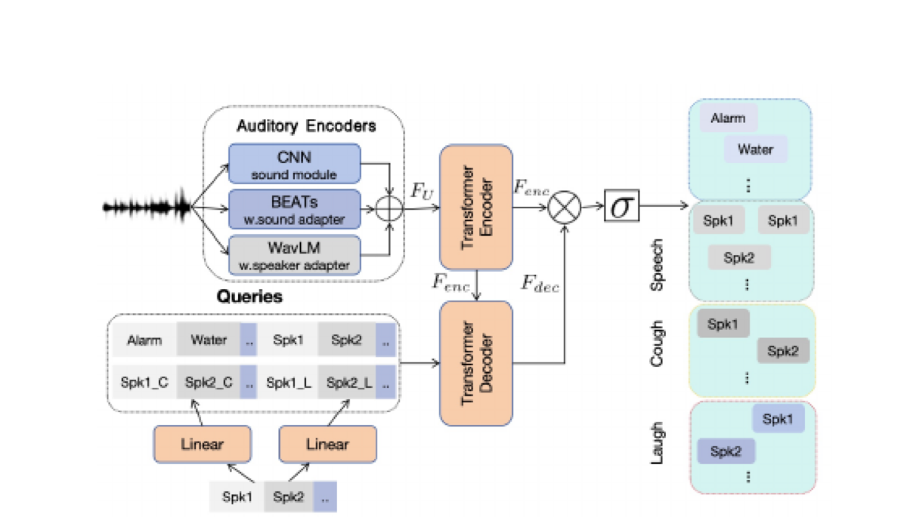
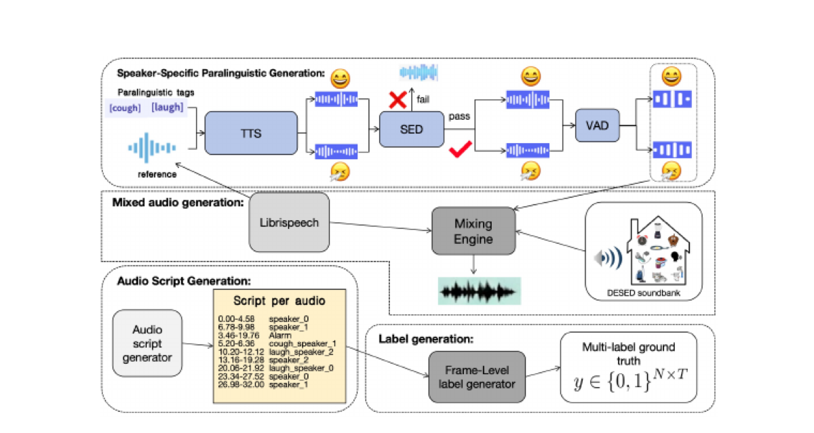

A
Task-specific query spaces
Speaker embeddings are projected into separate cough and laughter subspaces, then decoded alongside general sound and speech queries.

SA-UAED unifies sound event detection, speaker activity, and speaker-attributed paralinguistic events in one 50 Hz frame-level model.
This illustrative trace shows how a single model separates overlapping speakers, paralinguistic events, and background sounds.
Illustrative precomputed trace for explaining model outputs; replace with exported inference results for a live model showcase.
Generic speaker embeddings work well for articulated speech, but transient laughter and coughs alter the acoustic signature. SA-UAED learns a dedicated projection for each paralinguistic event.
Speaker embeddings are projected into separate cough and laughter subspaces, then decoded alongside general sound and speech queries.

A controlled simulation pipeline synthesizes speaker-specific coughs and laughter, mixes them with speech and domestic events, and exports exact frame labels.

Segment-based F1 at 50 Hz. Select a benchmark to compare the T-UAED baseline with SA-UAED.
Dedicated event subspaces nearly double speaker-attributed cough performance while DER remains unchanged.
Results from Tables 1–2 of the paper. EARS tests zero-shot transfer to genuine human vocalizations from 107 speakers.
SA-UAED adds only two 192 → 192 projections to the original T-UAED design—minimal architectural change, meaningful attribution gains.